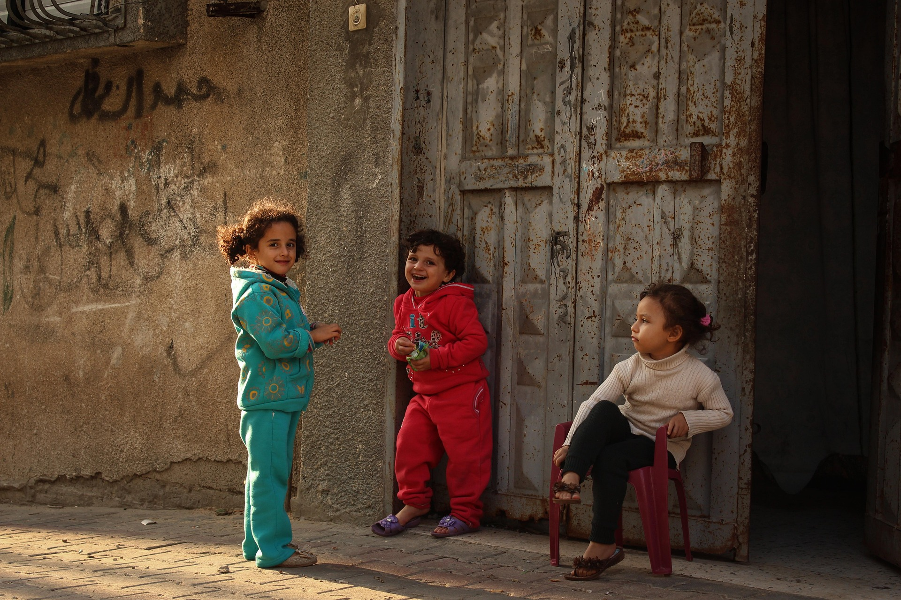
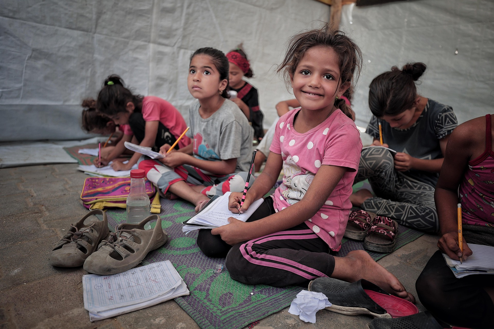
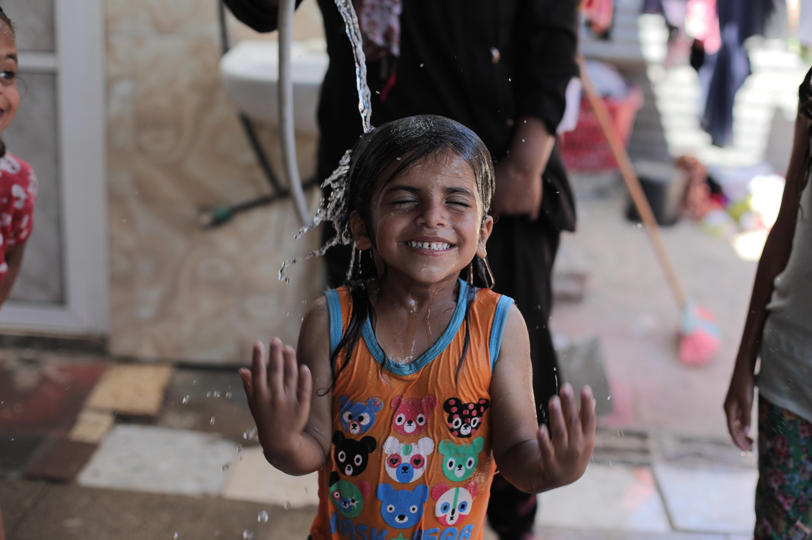

AMAL PROJECT
L’attenzione mediatica per la Palestina è stata travolta dalla natura effimera della viralità, sgretolandosi velocità di un feed che ne ha consumato il significato in pochi istanti, lasciando dietro di sé solo indifferenza e oblio. Questa sovrabbondanza di immagini di dolore, consumate in contenuti usa e getta dall’algoritmo, finisce per anestetizzarci, privando le persone ritratte della loro dignità e noi della capacità di ricordare.
AMAL nasce per rompere questo meccanismo. Non è un archivio di sofferenza fine a se stessa, ma uno spazio, fisico, editoriale e digitale, dedicato alla cura della memoria. Il mio obiettivo è sottrarre il racconto di ciò che accade alla logica della viralità algoritmica, per far spazio non solo al dolore, ma al Sumud: quella forma tenace di resistenza e perseveranza che definisce l’identità palestinese.
Ho progettato un sistema lento, fatto di vuoto e di pause, perché solo rallentando la visione possiamo smettere di guardare con gli occhi e iniziare a vedere con il cuore e con la mente. AMAL non archivia immagini per il piacere dell’accumulo, ma per trasformare l’impatto fugace in testimonianza consapevole, opponendo la permanenza della memoria alla volatilità del contenuto virale.
In questo scenario, la pratica del Graphic Design rivendica una nuova responsabilità etica: non più quella di accelerare il consumo, ma quella di progettare il limite. Disegnare il silenzio, imporre la sosta e curare lo spazio bianco attorno a un’immagine diventano atti di resistenza contro l’anestesia visiva. AMAL si propone quindi come un dispositivo critico che restituisce al destinatario la sovranità sul proprio sguardo. Non si tratta solo di conservare dei dati, ma di abitare il tempo della visione, trasformando lo spettatore passivo in un testimone attivo. Progettare per la memoria significa, in ultima analisi, riconoscere che dietro ogni pixel c'è un'esistenza che esige rispetto, e che il design ha il dovere di costruire il tempio in cui questa dignità possa finalmente restare.


